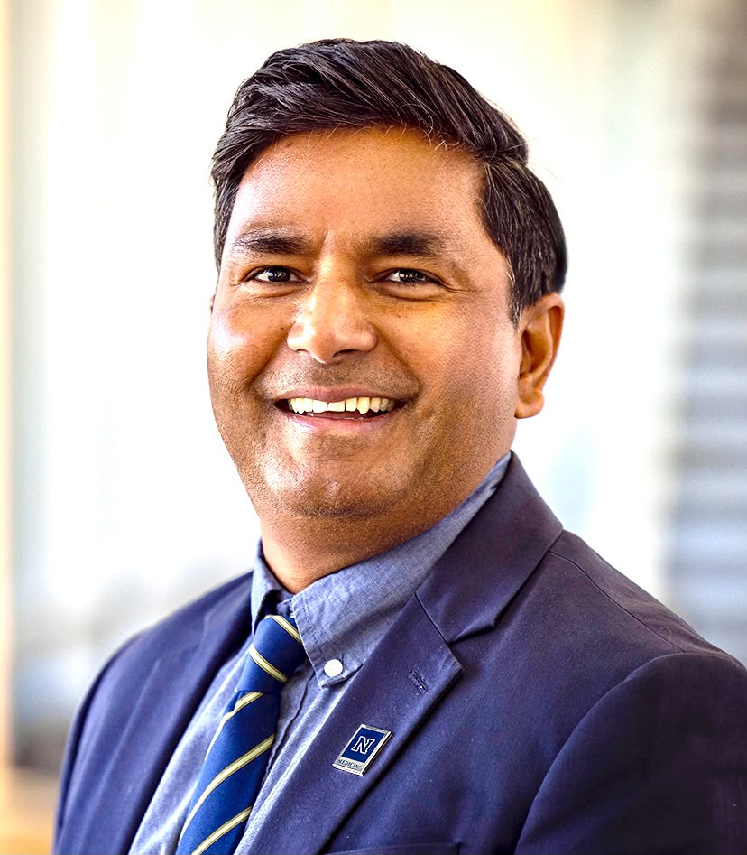
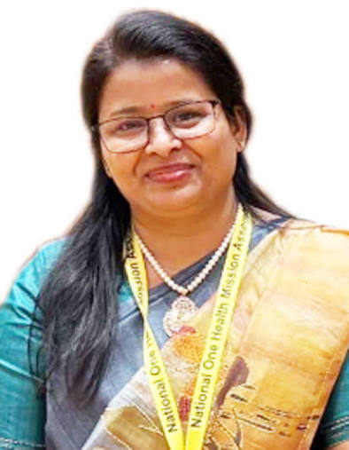
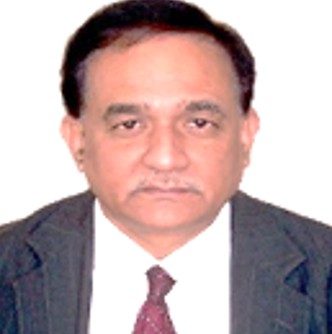
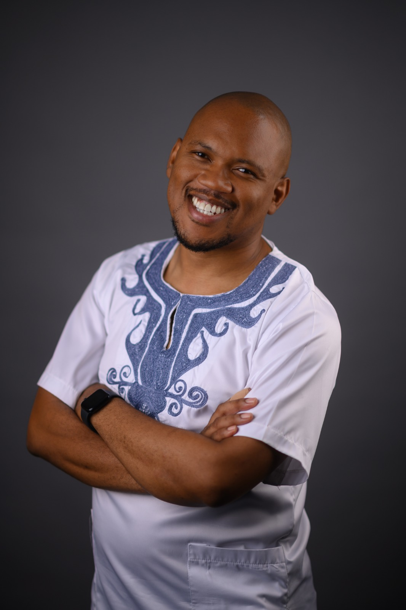
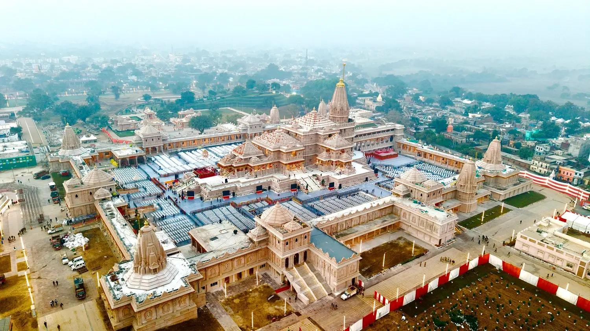
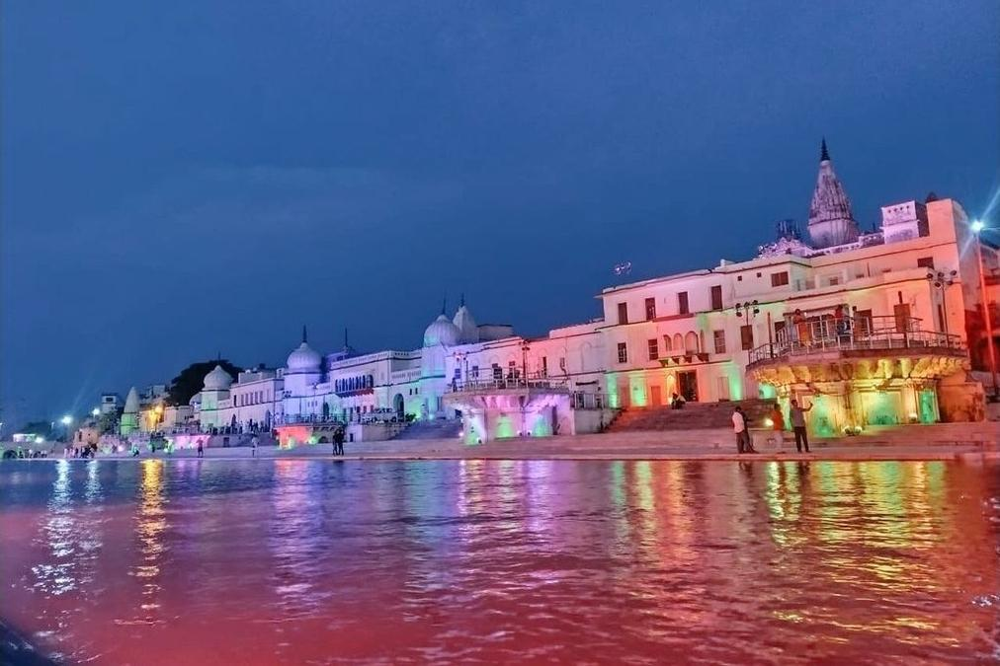

ANNOUNCEMENTS
News
Official announcements and new circulars will be added to this scrolling news area.
07–09 JANUARY 2027 • AYODHYA, UTTAR PRADESH, INDIA
ICMS 2027
Innovations in Microbiology & Biotechnology for a Sustainable Future
A platform for researchers, academicians, students, industry professionals and innovators to exchange ideas, discoveries and technologies shaping the future of microbiology and biotechnology.
In association with the Microbiologists Society, India
LATEST UPDATES
Keep an eye on conference announcements and key milestones. Updates will be added here by the organisers.
ANNOUNCEMENTS
Official announcements and new circulars will be added to this scrolling news area.
MARK YOUR CALENDAR
Abstract Submission Deadline: 15 November 2026
Last Date of Registration: 15 November 2026
Acceptance Notification: 20 November 2026
ABOUT THE CONFERENCE
ICMS 2027 brings together the scientific community to discuss emerging discoveries, technologies and applications across microbiological sciences and biotechnology.
The conference is designed to encourage interdisciplinary collaboration, knowledge exchange, young-researcher engagement and meaningful academic–industry interaction.
ICMS–2027 AT A GLANCE
Join researchers, educators, students and industry professionals for scientific exchange across microbiology and biotechnology in Ayodhya, India.
07–09 January 2027
Dr. Rammanohar Lohia Avadh University, Ayodhya, Uttar Pradesh
Department of Microbiology, in association with Microbiologists Society, India
ABOUT THE CONFERENCE
International Conference on Microbiological Sciences (ICMS–2027) is a three-day academic gathering organised by the Department of Microbiology, Dr. Rammanohar Lohia Avadh University, Ayodhya, in association with Microbiologists Society, India. The conference will bring together researchers, faculty members, scientists, students and professionals to exchange ideas on current developments in microbiology and biotechnology.
With the theme “Innovations in Microbiology & Biotechnology for a Sustainable Future,” the conference will provide a platform to discuss how microbial science can contribute to human and animal health, environmental protection, agriculture, food systems, industrial processes and emerging biotechnologies.
Through scientific presentations and professional interaction, ICMS–2027 aims to encourage the sharing of research findings, interdisciplinary discussion and new academic connections across institutions and research areas.
Present recent findings, methods and ideas in microbiology and biotechnology.
Build connections among universities, research institutions, laboratories and industry.
Create opportunities for students and early-career scientists to communicate their work and learn from peers.
Discuss science-led responses to challenges in health, agriculture, food, water and the environment.
WHO SHOULD ATTEND
ICMS–2027 welcomes participation from across academic, research and applied science communities.
University and college teachers interested in current research, teaching and interdisciplinary collaboration.
Researchers from universities, national laboratories, research centres and scientific organisations.
PhD scholars and early-career researchers presenting work, receiving feedback and building networks.
UG and PG students seeking exposure to research themes, scientific communication and career pathways.
Professionals working in biotechnology, diagnostics, pharmaceuticals, food, agriculture and related sectors.
Participants working at the interface of microbiology, public health, environmental management and One Health.
THE CONFERENCE EXPERIENCE
The conference website will carry programme and participation updates as they are finalised. Planned areas of engagement include:
Perspectives from invited experts on emerging questions and developments in microbiological sciences.
Opportunities for presenters to communicate research questions, approaches, findings and their significance.
A forum for visual presentation, discussion and feedback on research projects and emerging results.
Time to exchange ideas, identify shared interests and develop potential academic or professional collaborations.
Session timings, presentation instructions and the final programme will be published on the Programme page when confirmed.
Visit the programme page →EXPLORE THE SCIENCE
ICMS–2027 welcomes original research and ideas spanning fundamental, applied and translational microbiology.
Pathogens, diagnostics, infection biology and emerging infectious diseases.
AMR surveillance, antimicrobial stewardship and interconnected human, animal and environmental health.
Microbial ecology, soil and water systems, agriculture and environmental sustainability.
Microbial products, bioprocesses, bioremediation and emerging biotechnological applications.
Sequencing, microbial diversity, computational biology and microbiome research.
Viruses and bacteriophages, food safety, fermentation and industrial applications.
SCIENTIFIC LEADERSHIP
Learn from scientists and specialists contributing to research and innovation across microbiological sciences.

Department of Microbiology and Immunology, University of Nevada, Reno, USA

Director in Charge, National Institute of One Health, Nagpur, and National Institute of Virology, Pune

Former Senior Adviser, Department of Biotechnology, Ministry of Science and Technology, Govt. of India

Chair: SARChI in African Microbiome Innovation, Stellenbosch University, South Africa

Udayana University, Denpasar, Bali, Indonesia
SHARE YOUR RESEARCH
Researchers and students are invited to contribute original work through oral and poster presentations in the scientific areas of the conference.
Review the abstract format and submission guidance before preparing your contribution.
Read abstract guidelines →See the three-day programme overview, including scientific sessions and presentation opportunities.
View programme →Check participant categories, registration fees and payment information.
Registration details →AWARDS & RECOGNITION
ICMS–2027 includes recognition opportunities for outstanding scientific presentations, subject to the conference’s published eligibility criteria and evaluation process.
RESEARCH PUBLICATION
Presenting authors may submit full-length manuscripts for consideration by a suitable Scopus-indexed journal. Manuscripts remain subject to editorial screening, peer review, journal scope and the independent decision of the journal; submission does not guarantee publication.
Full-paper information →DISCOVER THE HOST CITY
Attend ICMS–2027 at Dr. Rammanohar Lohia Avadh University and discover Ayodhya’s rich cultural and historical heritage. Conference participants can explore venue, travel and local information on the dedicated visitor page.
Proposed Ayodhya tour: 10 January 2027 (paid; show your interest during registration).
Venue & Ayodhya guide →

BE PART OF ICMS–2027
Connect with the microbiology and biotechnology community on 07–09 January 2027.
COLLABORATION & SUPPORT
Partner and supporting organisation logos will appear here as confirmations are received.
SCIENCE FOR A SUSTAINABLE FUTURE
ICMS–2027 recognises the importance of public cleanliness, responsible resource use and the global sustainability agenda.
These links are provided for information about relevant initiatives. ICMS–2027 does not imply official endorsement or partnership unless separately announced.